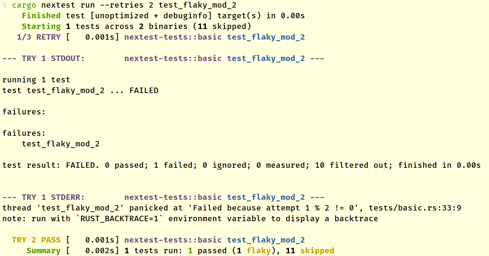

Retries and flaky tests
Sometimes, tests fail nondeterministically, which can be quite annoying to developers locally and in CI. cargo-nextest supports retrying failed tests with the --retries option. If a test succeeds during a retry, the test is marked flaky. Here's an example:

--retries 2 means that the test is retried twice, for a total of three attempts. In this case, the test fails on the first try but succeeds on the second try. The TRY 2 PASS text means that the test passed on the second try.
Flaky tests are treated as ultimately successful. If there are no other tests that failed, the exit code for the test run is 0.
Retries can also be:
- passed in via the environment variable
NEXTEST_RETRIES. - configured in
.config/nextest.toml.
For the order that configuration parameters are resolved in, see Hierarchical configuration.
Delays and backoff
In some situations, you may wish to add delays between retries—for example, if your test hits a network service which is rate limited.
In those cases, you can insert delays between test attempts with a backoff algorithm.
Note: Delays and backoff can only be specified through configuration. Passing in
--retriesvia the command line or specifying theNEXTEST_RETRIESenvironment variable will override delays and backoff specified through configuration.
Fixed backoff
To insert a constant delay between test attempts, use the fixed backoff algorithm. For example, to retry tests up to twice with a 1 second delay between attempts, use:
[profile.default]
retries = { backoff = "fixed", count = 2, delay = "1s" }
Exponential backoff
Nextest also supports exponential backoff, where the delay between attempts doubles each time. For example, to retry tests up to 3 times with successive delays of 5 seconds, 10 seconds, and 20 seconds, use:
[profile.default]
retries = { backoff = "exponential", count = 3, delay = "5s" }
A maximum delay can also be specified to avoid delays from becoming too large. In the above example, if count = 5, the fourth and fifth retries would be with delays of 40 seconds and 80 seconds, respectively. To clamp delays at 30 seconds, use:
[profile.default]
retries = { backoff = "exponential", count = 3, delay = "5s", max-delay = "30s" }
This effectively performs a truncated exponential backoff.
Adding jitter
To avoid thundering herd problems, it can be useful to add randomness to delays. To do so, use jitter = true.
[profile.default]
retries = { backoff = "exponential", count = 3, delay = "1s", jitter = true }
jitter = true also works for fixed backoff.
The current jitter algorithm picks a value in between 0.5 * delay and delay uniformly at random. This is not part of the stable interface and is subject to change.
Per-test overrides
Nextest supports per-test overrides for retries, letting you mark a subset of tests as needing retries. For example, to mark test names containing "test_e2e" as requiring retries:
[[profile.default.overrides]]
filter = 'test(test_e2e)'
retries = 2
Per-test overrides support the full set of delay and backoff options as well. For example:
[[profile.default.overrides]]
filter = 'test(test_remote_api)'
retries = { backoff = "exponential", count = 2, delay = "5s", jitter = true }
Note: The
--retriescommand-line option and theNEXTEST_RETRIESenvironment variable both disable overrides.
JUnit support
Flaky test detection is integrated with nextest's JUnit support. For more information, see JUnit support.